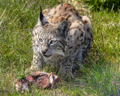

Довжина тіла самців у дорослому стані сягає від 76 до 110 см, а самок на 3–6 см коротша. Хвіст — 10–31 см, висота у плечах 60–65 см. Вага дорослих звірів найчастіше дорівнює 16–20 кілограмам, інколи до 32 кг. Рись має карі очі, китиці на вухах, короткий хвіст, великі гострі пазурі, та сильні задні лапи. Всі лапи зимою вкриті густим хутром. Жодний інший представник родини котячих не пристосований до снігу так добре, як рись. В Україні рись зустрічається досить рідко: в Карпатах та на Поліссі, у тому числі, в зоні відчуження Чорнобильської АЕС.
